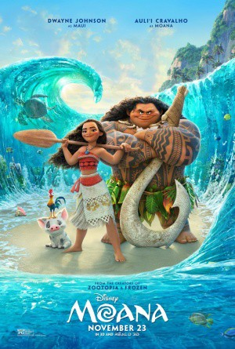

Alternativ: Moana
Auszeichnungen: für 2 Oscars nominiert
 
 IMDB-Wertung: 7.7 / 10
IMDB-Wertung: 7.7 / 10  Metascore:
Metascore: 
Moana Waialiki is a sea voyaging enthusiast and the only daughter of a chief in a long line of navigators. When her island's fishermen can't catch any fish and the crops fail, she learns that the demigod Maui caused the blight by stealing the heart of the goddess, Te Fiti. The only way to heal the island is to persuade Maui to return Te Fiti's heart, so Moana sets off on an epic journey across the Pacific. The film is based on stories from Polynesian mythology.
Jahr: 2016
Dauer: 107 Minuten
FSK: 0
Land: USA Studio: Walt Disney Studios Motion PicturesTonspuren: DTS - ,
Untertitel:
Auflösung: 1080p (1920x1080) Größe: 8919 MB
Genre: Komödie, Abenteuer, Fantasy, Animation/Trick, Familie, Musical
Regisseur: Ron Clements, Don Hall, John Musker, Chris Williams
Drehbuch: Tom Ropelewski
Soundtrack:
Darsteller:
Datei: X:\Kinder Disney HD\2000-2018\Vaiana - Das Paradies hat einen Haken (2016, FSK0, 1920x1080) 3D.mkv seit 23.03.2017
Festplatte: Kinder-Filme+Trick
 Es gibt insgesamt 45 Filme in der Gruppe 'Kinder Disney HD\2000-2018'
Es gibt insgesamt 45 Filme in der Gruppe 'Kinder Disney HD\2000-2018'